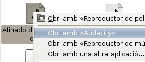
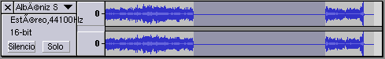
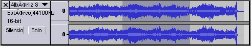
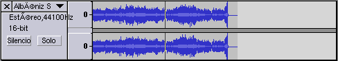
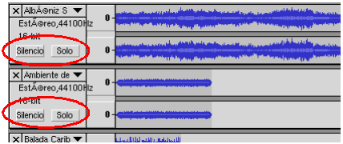

2.4.3. Herramientas básicas en Audacity
Para realizar la actividad necesitarás un fichero de audio, puedes utilizar el creado en la práctica 2.1 Extraccción de audio digital a partir de un CD audio ).
Has de tener en cuenta que, a diferencia de otros programas, Audacity sólo deja que se ejecute una vez, lo que sí puedes tener es más de una pista en el programa abierto.
1. Abrir un archivo de audio.
Para abrir un fichero de sonido en Audacity puedes hacer:
a) Inicia el programa Audacity y desde el menú Archivo / Abrir busca y abre el fichero deseado.
b) Con el programa ya ejecutándose, arrastrando el archivo a utilizar desde una ventana del Sistema Operativo hasta la ventana del Auddacity.
c) Haciendo clic con el botón derecho del ratón sobre el fichero y en el menú contextual selecciona abrir con Audacity.

d) Desde el menú Proyecto / Importar Audio. Una vez ya hay abierto un archivo de audio, para añadir una nueva pista, se ha de hacer con esta opción.
2. Copiar y pegar
Una parte importante de la edición musical consiste en las operaciones de copiar y pegar o cortat y pegar; en ambos casos siempre previa selección de toda la pista o parte de la pista con la que se trabajará.
Con la herramienta de selección activada, selecciona una parte de la pista, copiala con el menú Editar / Copiar, situate en otro lugar de la pista y con el menú Editar / Pegar añade el trozo antes copiado donde ahora está el cursor.
3. Cortar y pegar
La opcion Editar / Cortar hace lo mismo que en cualquier programa de edición de texto pero aplicado al sonido. Quita la selección de un sitio y la situa en otro.
4. Silencio
Silencia la parte seleccionada (opción Editar / Silencio)

5. Borrar
Opción Editar / Borrar, en este caso borra la parte seleccionada, recorta la pista, tiene el mismo efecto que utilizar la herramienta


6. Dividir una pista en dos
Si tras seleccionar una parte de la pista utilizas la opción Editar / Dividir se crearà una nueva pista con la parte seleccionada quedando sustituida en la original por silencio.
7. Importar varias pistas
Con el menú Proyecto / Importar Audio importa tres o cuatro archivos de sonido. Si haces clic sobre el botón Reproducir oirás todas las pistas a la vez; para indicar que pistas quieres oir y cuales no, utiliza los botones silencio(para silenciar una pista) y solo(para oir sólo una pista) que aparecen en cada pista.

8. Guardar el proyecto
Es conveniente que cuando quieras guardar tu trabajo lo guardes con el formato que utiliza Audacity (extensión aup) ya que de esta forma conservas todas las pistas y podrás aprovechar todas las características de Audacity (Archivo / Guardar proyecto); inconveniene, ocupa mucho espacio y no es un formato reconocible por la mayoria de los reproductores.
Si lo que quieres es poder oir tu trabajo con cualquier reproductor utiliza las opciones Archivo / Exporta Como Wav, Como MP3, Como OGG Vorbis, inconveniente mezcla todas las pistas en una.
Haz la prueba de guardar el proyecto multipista como proyecto audacity y exportalo también con formato MP3; cierra el programa, vuelve a obrir de nuevo los dos archivos y observa los resultados
Este artículo está licenciado bajo Creative Commons Attribution-NonCommercial 2.5 License
Formació del Professorat - CEFIRE